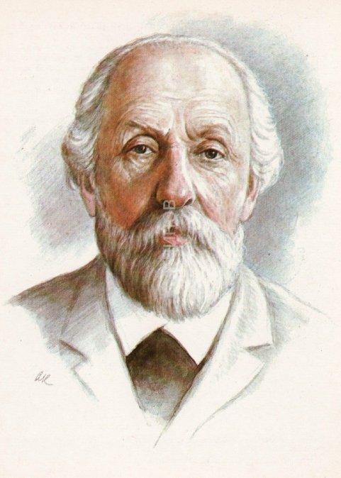

| Главная страница | Космос прошлого | Космос настоящего | Космос будущего |
На данном сайте Вы сможете познакомиться с основами истории освоения космоса. Но сначала давайте ответим на вопрос: Почему человечеству нужно изучать космос?
Прошло уже более полувека, как человек активно начал исследовать космос. С уверенностью можно сказать, что космонавтика наравне с компьютеризацией стала становым хребтом развития XX века. Сколько загадок, парадоксов, интересных фактов и перспектив хранят в себе эти бесконечные просторы. Космонавтика — это замечательная наука, и каждый мыслящий человек должен хоть немного интересоваться тем, что окружает нашу крошечную планету. Конечно, в последние годы постоянные новости о луноходах, МКС и Марсе, сделали из этих тем скорее избитые штампы. Но согласитесь, что покорение космоса, пожалуй, самое загадочное путешествие в истории человечества, которое только началось.
Основоположником космонавтики был Константин Эдуардович Циолковский.
О своем смысле жизни Константин Эдуардович говорил так:
“Основной мотив моей жизни – не прожить даром, продвинуть человечество хоть немного вперёд. Вот почему я интересовался тем, что не давало мне ни хлеба, ни силы, но я надеюсь, что мои работы, может быть скоро, а может быть и в отдалённом будущем, дадут горы хлеба и бездну могущества…человечество не останется вечно на Земле, но в погоне за светом и пространством сначала робко проникнет за пределы атмосферы, а затем завоюет себе всё околосолнечное пространство”.
Для более подробного знакомства с жизнью и работой Константина Эдуардовича приглашаю вас посетить
Виртуальный музей космонавтики имения К. Э. Циолковского Информация для этого сайта была заимствована из следующих источников: 1. Краткая история освоения космоса 2. Почему человечеству нужно изучать космос 4. Российский космос в 21 веке 5. История освоения космического пространства 6. «Поехали!»: космос в прошлом, настоящем и будущем 7. Достижения в освоении космоса
Главная страница
Космос прошлого
Космос настоящего
Космос будущего